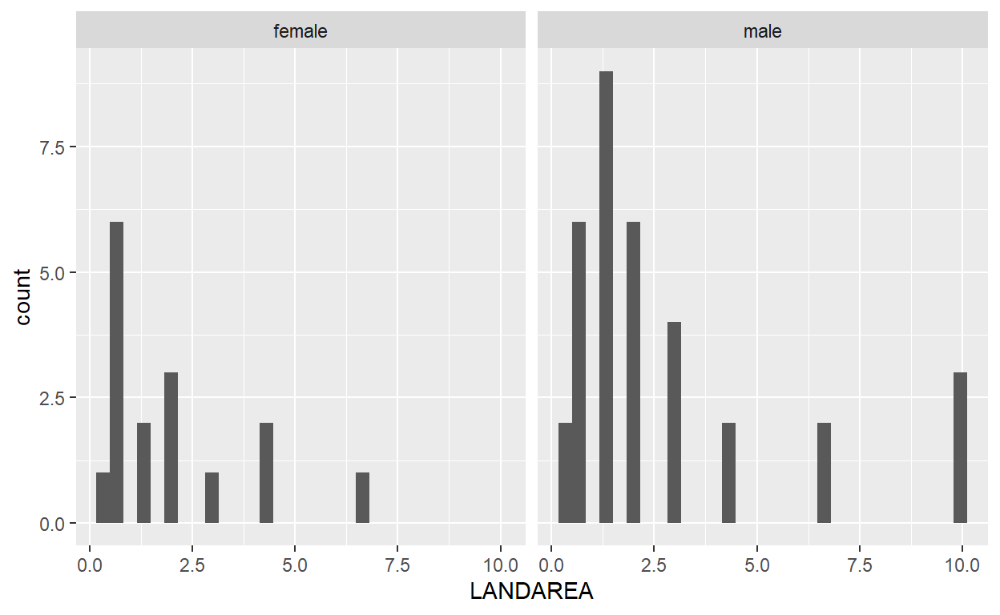
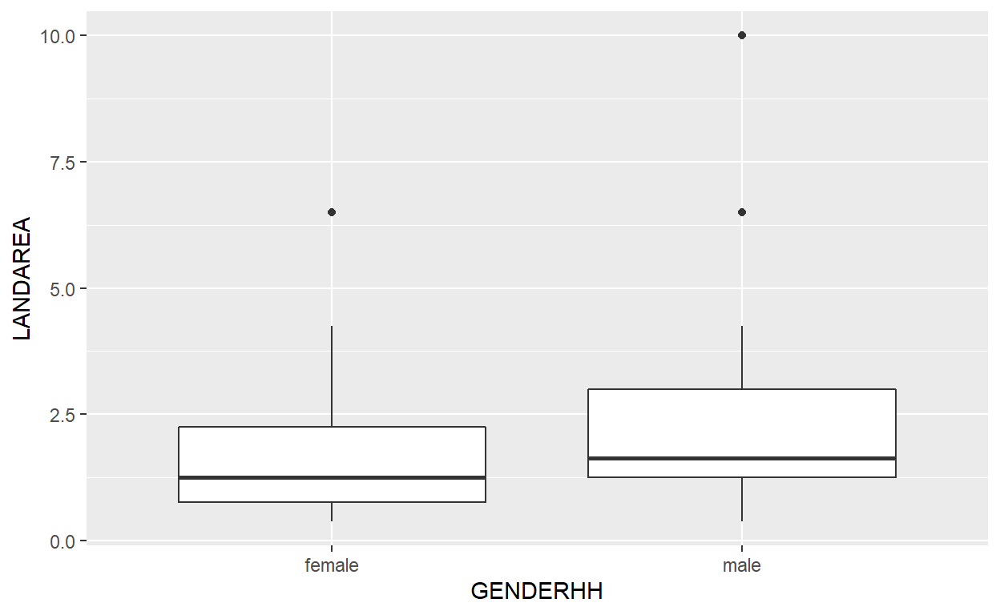
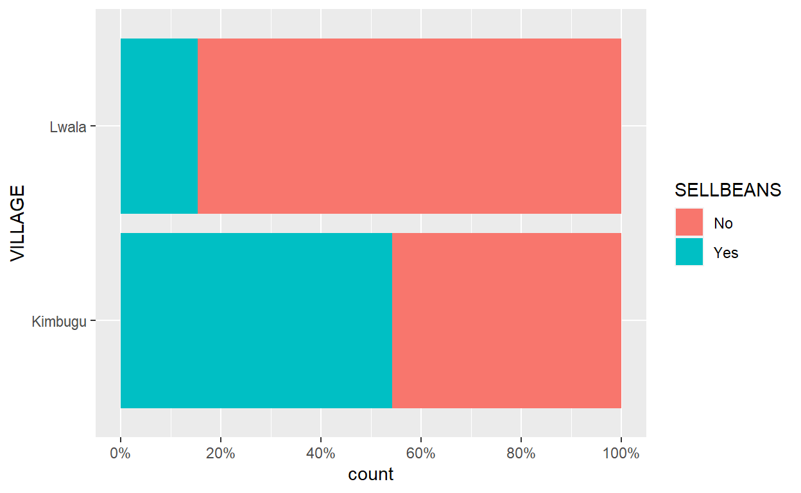

Overview
Doing the standard statistics hypothesis tests in R is pretty easy! In this workbook we are going to look at how you can do some very commonly used tests - t-test and chi-square test, as well as the non-parametric equivalents which you can use in cases when the assumptions are not met. We are going to assume that you have probably come across these methods before, but you also may want to follow some of the linked resources for a refresher.
In general these simple tests can be a useful starting point, but are limited in what they can tell you. So in the next module of the course we will talk more about statistical modeling, which let’s you extend upon the principles from these statistical tests and build on them to be applicable in more scenarios and can be applied in much more interesting ways than just these simple tests.
We are going to use the same BeanSurvey dataset we
looked at earlier in the course to make graphs & data manipulations
and we will now extend this into some statistical tests. The data is
embedded at the end of this workbook if you want a refresher on what
this data contains, and how the variables are named.
There are lots of resources walking through the basic mechanics of the t-test in R. There is a nice guide here
As you will see, the functions themselves are pretty straightforward. And, you may be pleased to hear, there are not very many new functions to learn about in this module, especially compared to the previous modules!
However, it is extremely important to use these functions in the correct context and know what to do when results are unexpected. One of the best things about R is the ability to create a reproducible workflow using markdown files to store commands, and explanations. And in the videos for this module we talk through one such example - trying to emphasise the process of thinking about what you are doing, and what it means, and how it can be improved. We will learn more about extending this approach from hypothesis tests into more complete statistical models in the next module of this course.
The second part of the video will come later in the workbook!
t tests
We can use a two sample t-test when we want to compare the means of a numeric variable across two groups, to determine if the difference is statistically significant.
So, if we think back to our BeanSurvey dataset - we
could compare whether the average amount of land owned by male headed
households is different to the average amount of land held by female
headed households. We should always start by exploring our data
first!
Preliminary Analysis
Before any formal hypothesis test, always look at summary statistics and plots showing the relationship you are interested in.
And this is the perfect chance to apply and recap all your newly acquired ggplot2 and dplyr skills!
In the code box below write the code to match the embedded
output, to show the means and standard deviations of
LANDAREA by GENDERHH, and the number of
observations in each group
BeanSurvey %>%
group_by(GENDERHH) %>%
summarise(n=n(),mean=mean(LANDAREA,na.rm=T),sd=sd(LANDAREA,na.rm=T))Now match embedded output, this time to show histograms and
boxplots of LANDAREA split by GENDERHH
Histograms of Land area by Gender of Head

BeanSurvey %>%
ggplot(aes(x=LANDAREA))+
geom_histogram()+
facet_wrap(~GENDERHH)
BeanSurvey %>%
ggplot(aes(y=LANDAREA,x=GENDERHH))+
geom_boxplot()Looking at the summary stats we can see that the average values are a little higher for male headed households on average as compared to female headed households.
We can see from the boxplots and histograms that generally the distributions of landarea are shifted a little higher for the male headed households. The medians and quartiles making up the boxes are higher for male headed households. However, we also see that the distribution is skewed by some large values - most farmers have under 3 acres of land, but there are a small number with much larger yields.
So from the plots and summary statistics it looks like male headed households have, on average, more land than female headed households. We can conduct a formal statistical significance test to see if there is sufficient evidence to confirm that hypothesis, or whether the observed differences in the data are no larger than those we would expect to see by random chance.
Running the t-test
We can use a t-test when we have a continuous numeric variable and we
either want to compare whether the average value is significantly
different from a fixed reference value (a one sample t-test) or whether
the average value is significantly different between two groups (a two
sample t-test). In this case we have appropriate data to use - a numeric
variable LANDAREA and a two-level categorical variable
GENDERHH.
The structure of the t.test function is that we provide
the name of our numeric variable (LANDAREA), followed by a
tilde (~), followed by the name of our 2 level grouping
variable (GENDERHH). Then we need the name of our data.
t.test(LANDAREA~GENDERHH,data=BeanSurvey)In this case we would conclude, from the p-value of 0.2496 that there is not enough evidence to say that there is a significant difference in the mean values of land area based on gender of head of household.
The output also shows us the t-statistic, degrees of freedom and a 95% confidence interval around the difference in the means.
It’s worth reminding yourself of how p-values work - they are very commonly misunderstood and therefore misinterpreted. There is a great video from Dr Nic about p-values here
With the t.test function it is important to note that,
unlike most of the functions we have used so far in this course the name
of the data comes as the second argument after the formula.
We can use a pipe (%>%) to get from the data to the
t-test, but we need to use it in a slightly different way. The pipe
assumes the first argument of a function is the data, but we can
override this. Within t.test, or any function where data is
not the first argument, we need to include an argument
data= . in a line of code following a pipe
%>%. The . denotes to inherit the data
coming in from the previous line.
BeanSurvey %>%
t.test(LANDAREA~VILLAGE,data=.)And that’s it! We shown you how to do a t-test in R…
… but! There are also other more practical things to consider when running a t-test; whether the hypothesis and the assumptions underlying it are sensible. And we should know what to do if we do encounter anything that makes us question the validity of the methods.
There is actually one assumption you were probably taught about when
learning the t test that you do not need to worry about at all when
using the t.test function in R.
Assumption 0: Equal Variance
The result you obtain by default from the t.test
function is not exactly the same as you would see in other software
packages, because R has slightly different default settings.
You probably learnt that you need to have approximately “equal variance” within your two groups for a t-test to be valid. However, by default, R uses a “Welch” t-test. This is a modification to the classic t-test which does not require equal variance.
There is no real reason not to use this modification. If the variances are exactly equal then both the classic and Welch t-tests will provide identical results; and when the variances are very similar the differences between the results are trivial.
But if the variances are not similar the classic t-test results would not be valid where the Welch t-test results would be. Looking at the summary statistics and plots we produced earlier it does appear that the variances may not be equal - the standard deviation is quite a bit larger for male headed households compared to female headed households. So in this case we would almost certainly want to keep with the default from R and use the Welch version of the t-test.
But, if you really love the classic t-test, or just want to confident
that the results match those you might have seen running the same code
from other software then you can add the argument
var.equal = TRUE into the code
t.test(LANDAREA~GENDERHH,data=BeanSurvey,var.equal=TRUE)As you can see, if you go back and compare the results to the previous output, the value of the t-statistic, and degrees of freedom change very slightly, and so does the p-value. In this case though, it would have made no substantial difference to our conclusions, despite the fairly large change in the p-value. In other cases it might be the difference between a significant and a non-significant result, so we should think carefully before assuming that the equal variance assumption is valid.
Assumption 1: Normality
We also have another assumption that we have approximate normality of the response with each group. The key word here though is ‘approximate’; a lot of people can get very hung up on whether they have a perfectly normal distributions. In fact, as we increase the size of our data, the t-test will still be valid with increasingly non-normal looking distributions. This is known as the ‘central limit theorem’.
Again, Dr Nic, is on call with a video about this here
It is usually worth checking the histogram to check that we have a roughly symmetrical distribution which is unimodal.
There are formal hypothesis tests we could use to ‘test’ normality, that some people might teach you about. But these are completely useless within this context.
There is no assumption requiring ‘exact’ normality. And using the tests of normality, the more data that we have the more likely we are able to identify that something is not ‘exactly’ normal. This is the exact opposite of what we need to satisfy this assumption of the t-test, because of the central limit theorem!
So simply visually inspecting the distributions from a histogram, is usually sufficient for us when we consider if our data can meet this assumption.
In this particular case we probably do not have enough data to be able to invoke the central limit theorem. And the histograms we produced earlier suggested a very substantial skew in the data. So we should consider possible alternatives.
Non-Parametric Alternative: Wilcoxon Test
A common solution to this problem would be to use a non-parametric test, like the Wilcoxon rank sum test, also known as the Mann-Whitney U test.
Instead of testing whether the mean values of land area differ between the groups, this considers whether the distribution of land area is shifted for male heads as compared to females, rather than whether the mean value is different.
This works by ranking the values in each group and comparing the average ranks in the two groups. This makes it robust to all sorts of strange looking distributions, because the maximum value can never be more than one unit higher than the next highest value.
However, it does have less statistical power to detect differences between groups than a t-test, which is why the t-test is often preferred.
Luckily, within R, the code for wilcox.test function is
almost identical to what we have seen already with t.test.
So switching to a non-parametric test is simple! We just change
t. to wilcox..
wilcox.test(LANDAREA~GENDERHH,data=BeanSurvey)And here we obtain a similar result with a p-value of p=0.3469 suggesting we have no evidence against the null hypothesis that distribution of land area for male heads is the same as for female heads. So this provides further reinforcement of our initial conclusion from the t-test.
The hypothesis is described in the output as “location shift” - this is another way of considering the ‘mean of the ranks’.
Because of the existence of ties, the Wilcoxon test does not directly compare the median values, which is a common misconception. In the video, you will have seen an example where the medians of the two groups are the same but the Wilcoxon test provides a significant result.
You can see a better idea of what the Wilcoxon test is actually doing
by exploring a little using the rank() function to rank the
values and then calculate the mean of the ranks and then pipe into a
plot or summary statistics.
The rank() function is quite simple, if we provide a
vector of numbers it will give rank 1 to the lowest, 2 to the next
lowest and so on.
some_numbers<-c(45,1,100,8)
some_numbers
rank(some_numbers)So we can add the ranks of LANDAREA into a new column of
our data using mutate and then investigate the summary
statistics on this new rank variable to get a better understanding of
the comparison by made in the Wilcoxon test.
BeanSurvey %>%
select(LANDAREA,GENDERHH) %>%
mutate(land_rank=rank(LANDAREA))BeanSurvey %>%
select(LANDAREA,GENDERHH) %>%
mutate(land_rank=rank(LANDAREA)) %>%
ggplot(aes(y=land_rank,x=GENDERHH))+
geom_boxplot()BeanSurvey %>%
select(LANDAREA,GENDERHH) %>%
mutate(land_rank=rank(LANDAREA)) %>%
group_by(GENDERHH) %>%
summarise(mean(land_rank))The smallest value is ranked as 1, the second smallest value ranked as 2 and so on. When we compare the distribution of ranks we can see the ranks are a little higher (i.e. larger area) for the male headed households, but again the difference is not large enough to conclude that this difference is larger than what we would see by chance.
If you haven’t come across it before, you can read more about the Wilcoxon rank sum test here.
Assumption 2: Independence
Probably the most important assumption to consider is whether or not
the observations are independent of each other in the two groups. The
simplest example where this is not the case when we have paired data. In
that scenario we would use a paired t-test, and this can also be
conducted using t.test(). However we apply this function in
quite a different way when we carry out the paired t-test, compared to
the previous example we saw, when we applied an independent two-sample
t-test.
A good example of this would be if we were to compare beans planted
in the short rains against beans planted in the long rains. We can
produce separate histograms or boxplots for the beans being planted in
long rains, and beans being planted in short rains, using seperate calls
to ggplot(). Because they are in different variables we
cannot directly map them onto the same plot like we have seen before -
we would need to do some additional data manipulation first. We will
learn more about that in the final module of the course, which will make
it a bit tidier, but producing two separate plots is still an effective
way of exploring the data here.
ggplot(data=BeanSurvey,aes(x=BEANSPLANTED_LR))+
geom_histogram()
ggplot(data=BeanSurvey,aes(x=BEANSPLANTED_SR))+
geom_histogram()And again, when we calculate mean and standard deviation values, we do not need to use group_by to see the differences between beans planted in long rain season and beans planted in short rain season. Since all the households have values for both variables, it’s not the households that define the groups, but the choice of variable.
BeanSurvey %>%
summarise(LR_mean=mean(BEANSPLANTED_LR,na.rm=T),LR_sd=sd(BEANSPLANTED_LR,na.rm=T),
SR_mean=mean(BEANSPLANTED_SR,na.rm=T),SR_sd=sd(BEANSPLANTED_SR,na.rm=T))When it come to now carrying out the hypothesis test through a paired
t-test, we using the same t.test function, but with a
slightly different way of specifying the inputs.
t.test(BeanSurvey$BEANSPLANTED_LR,BeanSurvey$BEANSPLANTED_SR,paired=TRUE)In this case although we can see that on average 1.3kg more beans were planted in the long rains, we do not have enough evidence at the 5% significance level to conclude that this difference is statistically significant (p=0.0978).
Note that this time, it is not possible to pipe into the paired
t-test since none of the arguments are data, instead we
need two supply two individual variables names. Lots of functions work
with pipes, but not all!
Again, we may be concerned about the normality assumption. With the
paired t-test what we care about is not the distribution of the
individual variables but the distribution of the differences within each
household So we can use mutate to calculate a column of
differences and then plot a histogram of the differences.
BeanSurvey %>%
mutate(PLANTED_DIFF=BEANSPLANTED_LR-BEANSPLANTED_SR) %>%
ggplot(aes(x=PLANTED_DIFF))+
geom_histogram()We may be concerned that results are being skewed by the two very
high values, and again we don’t have a very large data set so we cannot
quite rely on the central limit theorem. So perhaps we could also try
the Wilcoxon test again. And, luckily this works exactly like before
following a very similar pattern. The paired code for
wilcox.test is the same as the paired code for
t.test, all we need to do is change the function.
wilcox.test(BeanSurvey$BEANSPLANTED_LR,BeanSurvey$BEANSPLANTED_SR,paired=TRUE)Again, we obtain a similar conclusion, we do not have enough evidence to be confident that the difference between the seasons in the data is due to more than just chance.
The paired t-test works in this specific scenario, but there are more complicated violations of independence, which can’t be so easily fixed.
Particularly when we consider having more than two matched observations (e.g. data taken over multiple time points); experimental designs with blocking; or clustered sampling in surveys.
In these cases the t-test is not at all a sufficient method for analysis! So, you will have to start learning more about statistical modeling to do a good job of analysing your data - and matching the appropriate model structure to your data structure.
Chi-square test
Another common, simple statistical test is the chi-square test. We use this when we want to compare whether or not there is a relationship between two categorical variables.
In this workbook I am going to demonstrate using the
janitor library for this sort of analysis. This allows you
to produce tables, percentages, and chi-square tests in the same
tidyverse style as dplyr.
As this is quite a new package, when you look online there are not
many resources which take this particular approach, and you will instead
see other functions, like table or prop.table
being used. There is always more than one way to do something in R. For
me the janitor approach is actually much more
straightforward to follow than the traditional approach.
So, as an example, we may be interested in the relationship between
whether a household sells beans, SELLBEANS, and the village
VILLAGE.
Preliminary analysis
The preliminary analysis that we would first look at here would be a
cross-tab comparing these variables. We can pipe %>%
directly from the data into the tabyl function, and then
specify the variables to include in our cross-tab.
BeanSurvey %>%
tabyl(VILLAGE,SELLBEANS) The first variable will always be placed in the rows of the table, and the second variable will be placed in the columns.
Try to interpret those numbers from the frequency table output, and see if you think there is a pattern. It can sometimes be hard, especially if you have very uneven group sizes.
So we often will also look at marginal percentages. That: is for each level of one variable what percentage of respondents fall in the levels of the second variable.
We refer to these as “row percentages” or “column percentages”,
depending on whether we are looking at the percentages within each row
or percentages within each column. We can pipe the frequency table into
the function adorn_percentages to investigate this.
I.e. We have two possible questions: “What percentage of people in
Kimbugu sell beans?” This is the ‘row percentage’ because we are looking
within each village levels, and VILLAGE is the row factor.
The row percentage is the default option, so we don’t need to add
anything else to this function.
BeanSurvey %>%
tabyl(VILLAGE,SELLBEANS) %>%
adorn_percentages()By default this shows us proportions rather than nicely formatted
percentages. But we can pipe into an extra function,
adorn_pct_formatting to apply the percentage
formatting.
BeanSurvey %>%
tabyl(VILLAGE,SELLBEANS) %>%
adorn_percentages() %>%
adorn_pct_formatting()So we can see that, 54% of people in Kimbugu sell beans, and only 15% of people in Lwala sell beans.
Or we could ask for “What percentage of people who sell beans live in
Kimbugu”. We need to add the argument “col” into the
adorn_percentages function to obtain this, as it is called
the “column” percentage. We are looking within the column factor,
SELLBEANS
BeanSurvey %>%
tabyl(VILLAGE,SELLBEANS) %>%
adorn_percentages("col") %>%
adorn_pct_formatting()So here we can see that 77% of those who sell beans live in Kimbugu.
This is not a contradiction!
We always have to think carefully about which percentages are being calculating, and thinking about which would make the most sense to interpret.
In this case, the row percentages would be likely much more helpful to us than the column percentages. The more interesting question, and probably easier to interpret, would be to compare relative levels of bean selling across the different villages
To make a plot of these results, we would probably want to produce some bar charts. There are a few different ways of making bar charts we learnt about earlier in the course - either stacking or using facets.
See if you can replicate the plot below, or choose to produce a
different graph which shows the relationship between
VILLAGE and SELLBEANS. Make sure to modify the
scale on the x axis as well to make it more readable!

ggplot(data=BeanSurvey,aes(group=SELLBEANS,fill=SELLBEANS,y=VILLAGE))+
geom_bar(position="fill")+
scale_x_continuous(breaks=c(0,0.2,0.4,0.6,0.8,1),labels=c("0%","20%","40%","60%","80%","100%"))Running the test
To run the chi square test, we need to have the two-way frequency
table exactly as it comes from running the tabyl() line of
code. This then pipes directly into the chisq.test
function.
BeanSurvey %>%
tabyl(VILLAGE,SELLBEANS) %>%
chisq.test()And we obtain a p-value of 0.0095, saying that here we have enough evidence to conclude that farmres in Kimbugu are more likely to sell their beans compared to farmers in Lwala.
Make sure you pipe from the frequency table, created by
tabyl, into chisq.test and not from the table
of proportions or formatted percentages, created by either
adorn_percentages or adorn_pct_formatting.
Piping from the table of proportions does not give an error but the results it returns are nonsense.
BeanSurvey %>%
tabyl(VILLAGE,SELLBEANS) %>%
adorn_percentages() %>%
chisq.test()Do not do this!
Assumptions
There are two key assumptions for a chi-square test to be valid.
The first is similar to the t-test, and the Wilcox test. We need independent observations. If we don’t meet this assumption, we will have to learn more about statistical modelling, rather than use a chi-square test.
There is another assumption we have to meet though related to the
sample size within each category. Let’s try a different question -
whether HHTYPE is related to the selling of beans. See if
you can match the output below:
## Warning in stats::chisq.test(., ...): Chi-squared approximation may be incorrect##
## Pearson's Chi-squared test
##
## data: .
## X-squared = 4.6083, df = 5, p-value = 0.4655BeanSurvey %>%
tabyl(HHTYPE,SELLBEANS)
BeanSurvey %>%
tabyl(HHTYPE,SELLBEANS) %>%
adorn_percentages()
BeanSurvey %>%
tabyl(HHTYPE,SELLBEANS) %>%
chisq.test()We need to have a sufficient number of observations in all possible combinations of the categories of our two variables - in this example we see a warning message that the “chi-square approximation may be incorrect”. The general rule of thumb is to have expected frequencies of at least five observations in all combinations - we can clearly see many of the household types have fewer observations than that overall, before we even consider whether they sold beans or not.
In this case, we have three options for how to deal with it:
1. Use a different variable - like gender of household head. In this
case we have it already in our data, but if we did not we could create
this using mutate and then the recode function
which is very useful to know about.
In the recode function we first provide the variable we are recoding,
then we specify how we want to recode it following the pattern
"existing value" = "new value". So any of the female headed
categories I recode into the same new category. Looking into the data I
discovered that the “other” household was male headed. But if I was
recoding the data without knowing this, it is probably a more sensible
move to choose to remove this value using a filter.
BeanSurvey %>%
mutate(HHTYPE2 = recode(HHTYPE,
"Female headed absentee husband"="Female headed",
"Female headed, no husband"="Female headed",
"Male headed more than one wife"="Male headed",
"Male headed one wife"="Male headed",
"Single man"="Male headed")) %>%
filter(HHTYPE2!="Other") %>%
tabyl(HHTYPE2,SELLBEANS)When using janitor and the tabyl functions
it may often make sense to save the initial tabyl as an
object. This way we can then move to the subsequent steps, of looking at
percentages and conducting hypothesis tests, without replicating the
data manipulation steps every time
tabyl1<-BeanSurvey %>%
mutate(HHTYPE2 = recode(HHTYPE,
"Female headed absentee husband"="Female headed",
"Female headed, no husband"="Female headed",
"Male headed more than one wife"="Male headed",
"Male headed one wife"="Male headed",
"Single man"="Male headed")) %>%
filter(HHTYPE2!="Other") %>%
tabyl(HHTYPE2,SELLBEANS)
tabyl1
tabyl1 %>%
adorn_percentages()
tabyl1 %>%
chisq.test()- Only include the two common
HHTYPESwhich are “Female headed, no husband”, and “Male headed one wife”. We could restrict this usingfilter
tabyl2 <- BeanSurvey %>%
filter(HHTYPE%in%c("Female headed, no husband","Male headed one wife")) %>%
tabyl(HHTYPE,SELLBEANS)
tabyl2
tabyl2 %>%
adorn_percentages()
tabyl2 %>%
chisq.test()In this case we still do get the same warning - because the frequencies in the “female headed, no husband” category are still a little small.
- Use the non-parametric alternative, the Fisher Exact Test
Thankfully, much like with the wilcox.test() function,
we can use a non-parametric test when dealing with two categorical
variables by just changing the function name from
chisq.test() to fisher.test().
BeanSurvey %>%
tabyl(HHTYPE,SELLBEANS) %>%
fisher.test()Whichever method we used here we reached the same conclusion - no
evidence of relationship between household type and selling beans. But
notice that the hypotheses for options 1 and 2 are different. In option
one we are comparing differences only in the gender of the head, not
consdiering any of the other household composition that exists in the
HHTYPE variable. And in option 2 we are only comparing the
two specific household types.
Unlike with the t-test() we do not change the hypothesis
we are testing by using the Fisher test instead. However this test is a
lot more computationally intensive. With even a reasonably small dataset
(200 or so observations) you may find that it takes some time for the
computer to return the result. This is why the chi-square test is often
preferred, since it is always very quick for the computer to
calculate!
More tests?
These are the only hypothesis tests we will talk about explicitly in this course, but hopefully you will see that the syntax for producing these tests is not especially complicated. This is true for all commonly used statistical hypothesis tests.
If you know the simple statistical test you would like to conduct, and your data is in the appropriate format for that test, and the assumptions for that test can be met, it is usually pretty simple to find and then write the R code to carry out the test. There are a lot of statistical tests within base-R!
## [1] "ansari.test" "bartlett.test" "binom.test"
## [4] "Box.test" "chisq.test" "chisq.test"
## [7] "cor.test" "fisher.test" "fisher.test"
## [10] "fligner.test" "friedman.test" "kruskal.test"
## [13] "ks.test" "mantelhaen.test" "mauchly.test"
## [16] "mcnemar.test" "mood.test" "oneway.test"
## [19] "pairwise.prop.test" "pairwise.t.test" "pairwise.wilcox.test"
## [22] "poisson.test" "power.anova.test" "power.prop.test"
## [25] "power.t.test" "PP.test" "prop.test"
## [28] "prop.trend.test" "quade.test" "shapiro.test"
## [31] "t.test" "var.test" "wilcox.test"And those are just the tests which are in base-R - there will be many more in various additional libraries!
But ‘getting data in the appropriate format’, ‘checking the assumptions for the test’ and ‘knowing whether the hypothesis test makes sense for your question’ are not so straightforward! It is incredibly easy to do terrible data analysis in R, by skipping straight to the end p-value and churn out meaningless p-values. It is a bit like driving a car - anyone can push the accelerator and make it go forward; but if you don’t know how to change the gears or you completely ignore all of the road signs then you are probably going to crash.
This is, of course, not just true of R but of any analysis software.
However with R there is even less of an excuse for doing this since all
of the tools needed to prevent it are provided and freely available.
This is why we have placed so much emphasis in this course on data
manipulation (dplyr), exploratory graphics
(ggplot2) and using a coherent and reproducible workflow
(RStudio).
When doing research in the real world, it is also extremely unlikely that a simple hypothesis test will be sufficient for your analysis. But these are often what you are taught in your statistic modules, because they are the first step into more widely applicable statistical models. It is likely you will need to be doing some statistical modelling, to better explain the patterns and trends in your data. We will learn about this in the next module!
Exercises
In this module the exercises are a little different. It is now up to you to use RStudio to complete the exercises on your own computer.
You can download the files you need by clicking on this link here
Make sure you unzip these into a new folder, and then start a new project file based on that folder, like we learnt in the previous module.
You may need to install any of the packages used before proceeding - make sure you have these installed and loaded, by running the first code chunk, before you try to start solving any of the questions!
References
Video on interpreting p-values (Dr Nic’s Maths and Stats):
https://www.youtube.com/watch?v=eyknGvncKLw
Video on choosing an appropriate test (Dr Nic) https://www.youtube.com/watch?v=rulIUAN0U3w
Tutorial on t-tests and non-parametric equivalents (UC Business
Analytics R Programming Guide):
https://uc-r.github.io/t_test
Tutorial covering all the tests covered in this session in more detail. (Note - Part I (Chi square tests) is much more complicated in this tutorial than the method we have shown! Suggest only working through Parts II and III) https://sbc.shef.ac.uk/workshops/2019-09-18-stats-r/practical.nb.html
Appendix: ‘BeanSurvey’ dataset
The data we are using in this session is an extract of a survey conducted in Uganda from farmers identified as growing beans.
The dataset contains an extract of 50 responses to 23 of the survey
questions, and has been imported to R as a data frame called
BeanSurvey.
A summary of the columns in the dataset is below.
| Column | Description |
|---|---|
| ID | Farmer ID |
| VILLAGE | Village name |
| HHTYPE | Household composition |
| GENDERHH | Gender of Household Head |
| AGEHH | Age of Household Head |
| OCCUHH | Occupation of Household Head |
| ADULTS | Number of Adults within the household |
| CHILDREN | Number of Children (<18) within the household |
| MATOKE | Do they grow matoke? |
| MAIZE | Do they grow maize? |
| BEANS | Do they grow beans? |
| BANANA | Do they grow banana? |
| CASSAVA | Do they grow cassava? |
| COFFEE | Do they grow coffee? |
| LANDAREA | Land area of farm (acres) |
| LABOR | Labor usage |
| INTERCROP | Intercrops with beans |
| DECISIONS | Household decision responsibility |
| SELLBEANS | Do they grow beans for sale? |
| BEANSPLANTED_LR | Quantity of beans planted in long rain season |
| BEANSPLANTED_SR | Quantity of beans planted in short rain season |
| BEANSHARVESTED_LR | Quantity of beans harvested in long rain season |
| BEANSHARVESTED_SR | Quantity of beans harvested in short rain season |
Spend some time looking through the exploring the full dataset embedded below, to familiarise yourself with the columns and the type of data stored within each column. You may need to refer back to this data at times during this tutorial. Remember that R is case sensitive, so you will always have to refer to the variables in this dataset exactly as they are written in the data. There is a column in this data called “GENDERHH” but there is no column in this data called “GenderHH”.
(You can use the arrow keys on your keyboard to scroll right in case the data table does not fit entirely on your screen)